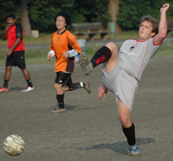
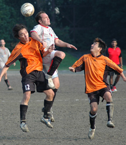

|
Oi Futo, Sun 29th Oct. The Barbs team bus rolled up to the Famous Oi Futo Dirt Stadium on a day where conditions were perfect for a display of the beautiful game, unfortunately the pitch looking remarkably like the new Wembley before they lade the grass, wasn't going to suit the silky skills of the Barbs academy of football.
Barbs lined up in the new strip, well ten of us did, the other players deciding to sleep off their hangovers on the back of the bus, so some American bloke decided he'd show us how they play "soccer" back in the states and help us make the bare 11.
We lined up with Dave between the sticks, a back line of Ferg,John, Hideki and Clarke, midfield of Muramoto, Jimmy, Kaneko and Pepe Delsaux with Leon and our American guest up front. Barbs started where they left off last week taking the game to the opposition and creating a few half chances, John was turning his left back role into more of a left wing back and was unlucky to see his effort go the wrong side of the post, the pitch and the indecision of the two stoned center backs lead to Barbs opening their account when their star striker Leon plucked from the Victorious England side that just won the Dwarf World Cup nipped in to rob the stoneds back line of the ball and race away to place a left footed shot in the bottom right hand corner.
Muramoto was starting to produce what was to ultimately be a man of the match performance on the right wing with some excellent through balls and equally as good defensive work, again a few more half chances for the barbs and not much in reply from Stoneds saw us through to the half time whistle.
Special note has to be made of the solid Dave Kell save followed by the not so fantastic sight of his kick-out coming back off Muramoto's head only to be hoofed off the line by Pepe. Quality stuff.
Stoneds came out with a little more intent in the second half and without some great defensive work from ferg clearing two Stoneds efforts off the line we could have found ourselves having to chase the game, Stoneds did get the ball in the back of the net against the run of play but with a Barbs effort that agonizingly dropped on the roof of the net after the keeper had been lobbed, and two more good chances from Jimmy and John the Barbs came away with an unlucky point. Great display from all and the Barbs go into their next fixture in confident mood.
MOTM : Muramoto
Report by Leon Hulme
|